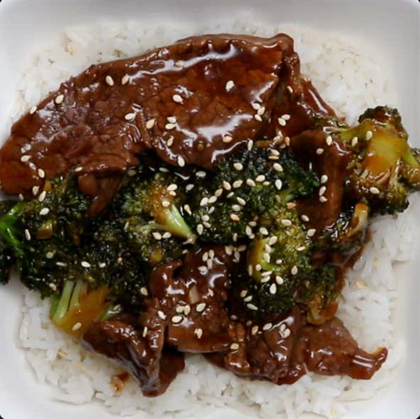

Beef and Broccoli

Easy and Delicious Beef and Broccoli recipe
This is a simple beef and broccoli recipe that will have everyone wanting seconds. Even though it's a quick and easy recipe- it's so so delicious and will keep you wanting more!
Ingredients
- 1 lb flank steak, sliced into thin strips
- 3 cloves garlic, minced
- ½ teaspoons grated ginger
- 2 tablespoons sesame oil
- ⅓ cup low sodium soy sauce
- ¼ cup brown sugar
- ¼ cup honey
- 1 cup beef broth
- 4 cups broccoli floret
- 2 tablespoons cornstarch
- 2 tablespoons water
- sesame seed, as desires
Steps
- In an oiled skillet over medium-high heat, sear the steak until cooked all the way through.
- Add a little more oil, then add the garlic and ginger to the pan. Sauté until soft.
- Add the sesame oil, soy sauce, brown sugar, honey, and beef broth. Stir until combined.
- Add the broccoli florets.
- In a separate bowl, combine cornstarch and water. Add to broccoli mixture. Bring to a boil, until sauce has thickened.
- Add the beef back into the mixture, and serve over rice with sesame seeds, if desired.
- Enjoy!
Home